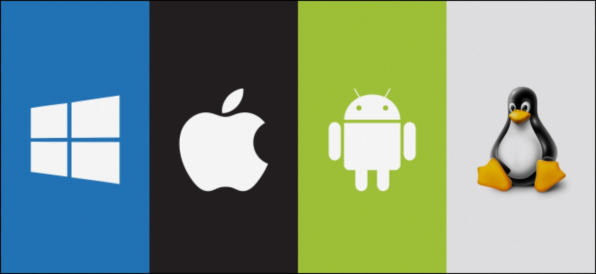

Types
Operating systems usually come pre-loaded on any computer you buy. Most
people use the operating system that comes with their computer, but it's possible to
upgrade or even change operating systems. The three most common operating systems for
personal computers are Microsoft Windows, macOS, and Linux.
Modern operating systems use a graphical user interface, or GUI (pronounced gooey). A
GUI lets you use your mouse to click icons, buttons, and menus, and everything is
clearly displayed on the screen using a combination of graphics and text.

Types of operating systems
Single-tasking and multi-tasking
A single-tasking system can only run one program at a time, while a multi-tasking operating system allows more than one program to be running in concurrency. This is achieved by time-sharing, where the available processor time is divided between multiple processes. These processes are each interrupted repeatedly in time slices by a task-scheduling subsystem of the operating system. Multi-tasking may be characterized in preemptive and co-operative types. In preemptive multitasking, the operating system slices the CPU time and dedicates a slot to each of the programs. Unix-like operating systems, such as Solaris and Linux—as well as non-Unix-like, such as AmigaOS—support preemptive multitasking. Cooperative multitasking is achieved by relying on each process to provide time to the other processes in a defined manner. 16-bit versions of Microsoft Windows used cooperative multi-tasking; 32-bit versions of both Windows NT and Win9x used preemptive multi-tasking.
Single- and multi-user
Single-user operating systems have no facilities to distinguish users, but may allow multiple programs to run in tandem. A multi-user operating system extends the basic concept of multi-tasking with facilities that identify processes and resources, such as disk space, belonging to multiple users, and the system permits multiple users to interact with the system at the same time. Time-sharing operating systems schedule tasks for efficient use of the system and may also include accounting software for cost allocation of processor time, mass storage, printing, and other resources to multiple users.
Distributed
A distributed operating system manages a group of distinct, networked computers and makes them appear to be a single computer, as all computations are distributed (divided amongst the constituent computers).
An operating system (sometimes referred to as “OS” in the acronym) is a process, after the initial startup programs are loaded into the computer, management, computer, all the other programs. Other programs are called applications or application. The application makes use of the operating system through a defined application program interface (API) service request. In addition, the user can interact with the user interface operating system, such as direct command language or graphical user interface (GUI).
Operating system is system software, the computer work. We can say that an operating system (OS) is software and hardware interfaces for your behavior. It contains not only speak the language for hardware drivers, but also provide you with a very specific graphical user interface (GUI) to control the computer. An operating system can also be used as an interface (from the hardware) to other software. Like Windows or Linux or a Mac OS operating system provides a complex operating system services, but also has inch Solitaire, paint, Messenger build applications, are applied.
Application software is software that you install your operating system. It includes procedures, just let you use your computer things. These applications are run on various operating systems. These include like your word processing program, spreadsheet things, e-mail client, Web browser, games and many other programs, such as most of Microsoft’s Office suite is written in the Mac and Windows versions, but you still have to have your correct version of the operating system.
When an ISP’s preliminary consideration is to look at the type of access required. Some ISP only provides dial-up access, is the slowest type of connection. If you want cable service, you will check with your local cable provider to see if it is to provide cable access. For DSL service, you may have several options – or it may be DSL is not yet available in your area. Typically, this can be remedied by telephone calls to improve the local telephone company lines.
Each ISP has its own privacy policy and service (TOS) contract terms that users must agree to before subscription will be accepted. Privacy policy say the company will not with the personal information collected at the time of registration. Name, address, credit card number, is usually required. Privacy policy and under what conditions should also be your personal information with third parties may be, government officials or others to share state. Terms of service contract use of this service. For example, dial-up access is often sold “unlimited access”, but this is not literally. General limit per month dial-up accounts 250-400 hours, depending on ISP. The real unlimited access (to your computer and actively connected to the Internet 24 / 7) are called dedicated access. Most DSL or cable subscriptions allow dedicated access.
ISP services to the relevant provisions of the contract hackers rule also provides protection of copyrighted material, denial of service attacks, harassing other people, spam, damage to services, and many others. This is, most of the ISP’s protection of the law so that potential customers know that ISP will absolutely not be tolerated. If you are planning to use cyberspace ISP, is also limited in the checks here. Many ISP does not allow commercial sites are set up on the server. This usually means that nothing can be sold from your personal web space, including, for example, a software program, you say, original music, or any other items. ISP’s website often for personal use only, blog, post pictures, and more.
An operating system on multiple operating systems to share hardware resources solutions. We have presented its structure, and suggested using the Linux operating system for ix86-based implementation. We also defined the field of application. Although the discussion of the implementation focused around the use ix86 Linux, proposed concept can be extended to other structures and other basic operating system to provide the same functionality.
advantages
- Computing Source
An operating system acts as an interface between the user and the hardware. It allows users to input data, process it, and access the output. Besides, through the operating system, users can communicate with computers to perform various functions such as arithmetic calculations and other significant tasks.
- Resource Sharing
Operating systems allow the sharing of data and useful information with other users via Printers, Modems, Players, and Fax Machines. Besides, a single user can share the same data with multiple users at the corresponding time via mails. Also, various apps, images, and media files can be transferred from PC to other devices with the help of an operating system.
- No Coding Lines
With the invention of GUI, operating systems allow accessing hardware without writing programs. Unlike, earlier users don’t have to write code of lines to access the hardware functionality of a computer system.
- Multitasking
An operating system can handle several tasks simultaneously. It allows users to carry out different tasks at the same point in time.
disadvantages
- Expensive
When compared to the open-source platforms like Linux, some operating systems are costly. While users can use a free OS but generally they are a bit difficult to run than others. Moreover, operating systems such as Microsoft Windows with GUI functionality and other in-built features carry a costly price tag.
- System Failure
If the central operating system fails, it will affect the whole system, and the computer will not work. Moreover, an OS is the heart of a computer system without which it cannot function. If the central system crashes, the whole communication will be halted, and there will be no further processing of data.
- Highly Complex
Operating systems are highly complex, and the language which used to establish these OS are not clear and well defined. Besides, if there’s an issue with OS users cannot directly understand, and it cannot be resolved quickly.
- Virus Threats
Threats to the operating systems are higher as they are open to such virus attacks. Many users download malicious software packages on their system which halts the functioning of OS and slow it down.
Links
- main page
- Microsoft
- Linux
- MacOs